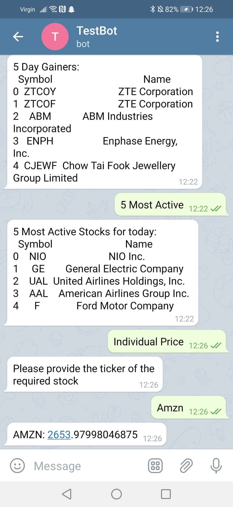
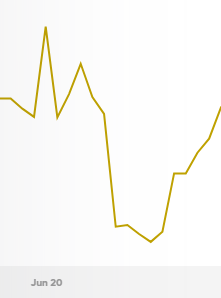

Over the summer after my second year, I decided to develop an automated algorithmic trading bot. After having done some research I decided to program it in python. I ran it on my Raspberry Pi, used telegram to control the bot and the Alpaca APi in order to place trades.
I started off by getting to grips using the Telegram API. I made a few quick test programs to send and recieve messages. I did this using the 'BotFather' on Telegram and used the telegram API on python.
To further my newly found knowledge I decided to make a stock information bot using Telegram. You can message the bot asking for information about a stock and the bot will reply with the current price. It could also give details like the highest 'day gainers' and the most active stocks of the day. I got the information by web scraping from Yahoo Finance. Using the yfinance API made it much easier to get the information required by the bot.
After I had managed this I decided to lean how to open and close positions on the market. I decided to only open positions by buying, and close them by selling. This made the programming easier as I was getting to grips with the syntax. I made a bot that would allow me to place trades when I messaged it. Once I decided to close the trade, I would send another message and the bot would do it.
Then came the interesting part: automated trading. I did some research into some basic trading strategies. I decided to go for some momentum strategies as they seemed like they would be ideal for a beginner. I used the built in functions to the API to get details about the most active stocks of the last 24 hours. Then depending on the strength of the momentum the bot would decide to open a position or not. If a trade was placed. It would keep getting data (updated every minute) and choose a suitable time to close the position. This could be at a predicted maximum (take profit) or at an unexpected turn (stop loss). On a daily basis, the bot would tell me the stocks it was tracking, when it opened a position, and when it closed a position. As well as a daily summary at the end of the day, showing the starting equity, finishing equity and the percentage increase for the day. At the start of running the bot, it was very random as to whether it would make profit or loss on any given day. However after some adjustments every now and then, such as looking at more stocks on a given day to increase the spread of the portfolio, it started making profit semi-regularly on a day to day basis.
